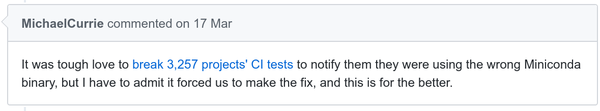

class: left, top # A comment on maintaining Python packages #### Typical Continuous Integration setup ``` wget https://repo.continuum.io/miniconda/Miniconda-latest-Linux-x86_64.sh ``` * used by 3k+ projects on Github -- * outdated 2016 conda version => use `Miniconda`**3**`-latest-Linux-x86_64.sh` * removed from [repo.continuum.io/miniconda/](https://repo.continuum.io/miniconda/) in May 2017  -- #### Steps to fix *[x N package maintainers]* * Detect the problem * Search for a solution * Implement a fix -- Also vulnerability fixing, CI configuration, datasets URL, `left-pad` (Node JS), ... How can we make (small) changes across Github repositories? --- class: left, top # Contributing to multiple Github repositories <img src="https://cloud.githubusercontent.com/assets/630936/24074069/25d5a306-0c02-11e7-9d81-9ce008676dc8.png" alt="Schoty diagram" style="width: 110%;"/> * Monorepo created with empty history by aggregating shallow clones * Synchronization achieved by processing and applying `git` patches. [http://github.com/schoty](github.com/schoty) (work in progress) | <img src="https://png.icons8.com/twitter/android/24" title="Twitter" width="18" height="18"> [@RomanYurchak](https://twitter.com/RomanYurchak)